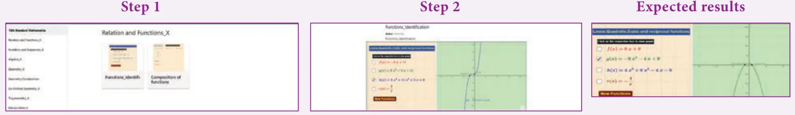
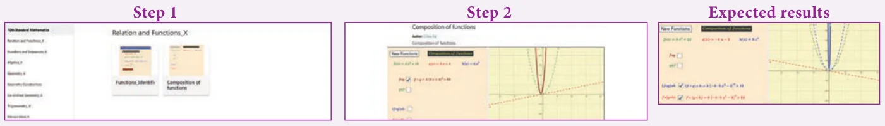

ICT 1.1
Step 1: Open the Browser type the URL Link given below (or) Scan the QR Code. GeoGebra work book named “Relations and Functions–X” will open. In the left side of the work book there are many activity related to Relations and Functions chapter. Select the work sheet “Functions Identification”
Step 2: In the given worksheet click on the check boxes corresponding to each function on left hand side. You can see the graph of respective function on Right hand side. Analyse each graph and then click “New Functions” and continue till you understand.

ICT 1.2
Step 1: Open the Browser type the URL Link given below (or) Scan the QR Code. GeoGebra work book named “Relations and Functions–X” will open. In the left side of the work book there are many activity related to Relations and Functions chapter. Select the work sheet “Composition of Functions”
Step 2: In the given worksheet click on the check boxes corresponding to each function on left hand side. You can see the graph of respective function on Right hand side. Analyse each graph and then click “New Functions” and continue till you understand.

You can repeat the same steps for other activities
https://www.geogebra.org/m/jfr2zzgy#chapter/356191 or Scan the QR Code.